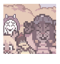

Today, Kris came by.
I thought they wanted to play the piano again. But after I wondered out loud if that was the reason, they made an uncomfortable face and changed the subject.
I asked if they wanted to play Dragon Blazers while I watched, but they showed no interest. I knew they liked Super Smashing Fighters more, but...
I was at a loss of what to do. Wondering why they were even here if not for video games or the piano. It wasn't like before, where they showed up almost constantly (dragged by Azzy sometimes. But still).
... The strangest thing happened, however.
They looked directly at me, and muttered, "The photos. Do you still..." Leaving the rest unsaid.
I remained silent. It was like the world had stopped for a moment. I couldn't believe my ears.
I mean... it's Kris. They avoid things until they can't anymore.
I told them to wait for a moment while I went to my room. I digged the album up. We sat on the couch and began flipping through.
For a while, I tried not to look at those pictures. I knew my heart wouldn't be able to handle it.
But now... Seeing them...
It was as if... we were friends again.
Exploring without a care in the world.
